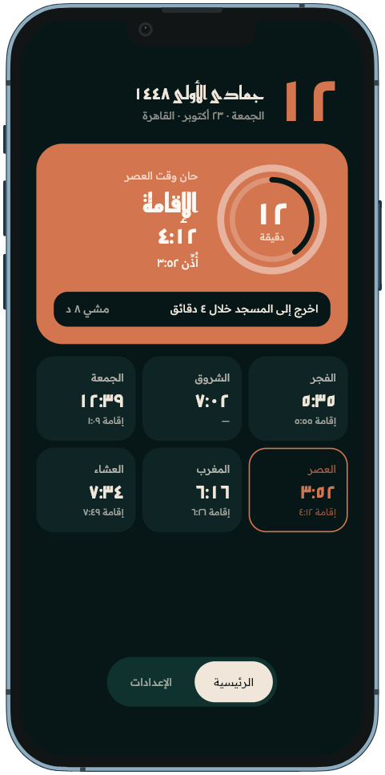
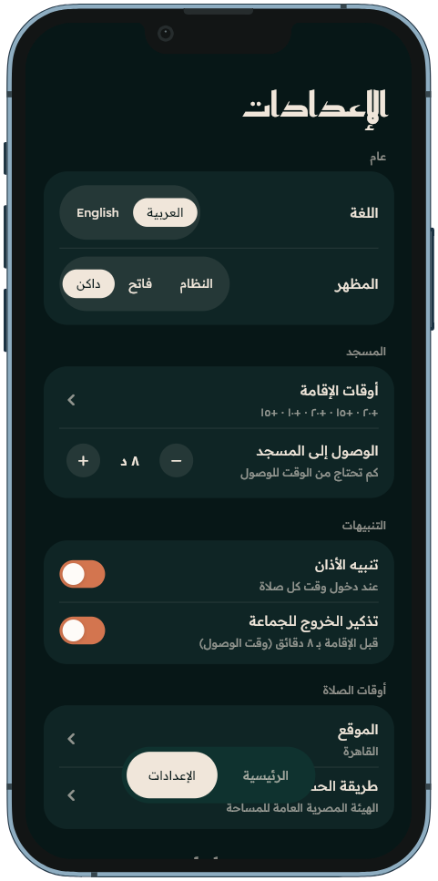

اخرج إلى المسجد في الوقت المناسب
جماعة يعدّ لك الوقت حتى الإقامة، ويخبرك متى تخرج من بيتك لتدرك الجماعة من أولها.
- مجاني لوجه الله
- بلا تسجيل حساب
- بلا أي نوع من الإعلانات
- المواقيت محفوظة على جهازك
حمّل التطبيق
لأجهزة أندرويد فقط، الإصدار 2.0.0، حجمه 27 ميغابايت
بعد التحميل افتح الملف واسمح بالتثبيت من هذا المصدر.

